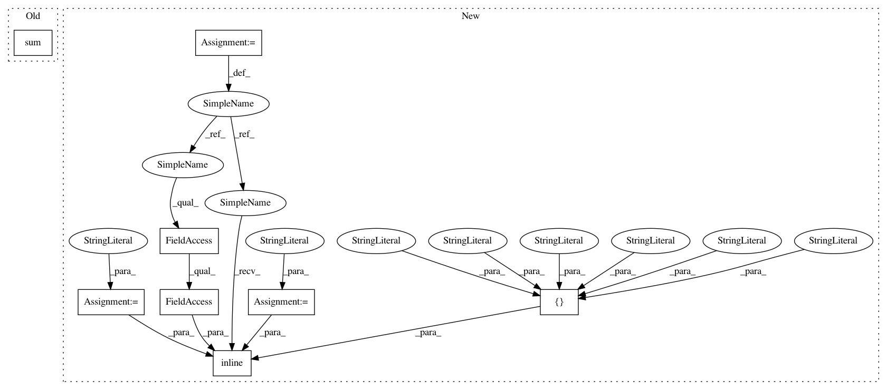

ce2884f0a7dc26087a5225bc92e39643920e3e16,GPy/kern/linear.py,linear,dpsi2_dmuS,#linear#Any#Any#Any#Any#Any#Any#,169
Before Change
AZZA = self.ZA.T[:, None, :, None] * self.ZA[None, :, None, :]
AZZA = AZZA + AZZA.swapaxes(1, 2)
target_S += (dL_dpsi2[:, :, :, None] * self.ZA[None, :, None, :] * self.ZA[None, None, :, :]).sum(1).sum(1)
dpsi2_dmu = (dL_dpsi2[:, :, :, None] * np.tensordot(mu, AZZA, (-1, 0))).sum(1).sum(1)
target_mu += dpsi2_dmu
def dpsi2_dZ(self, dL_dpsi2, Z, mu, S, target):
self._psi_computations(Z, mu, S)
After Change
//target_S_dummy += (dL_dpsi2[:, :, :, None] * self.ZA[None, :, None, :] * self.ZA[None, None, :, :]).sum(1).sum(1)
//Using weave, we can exploiut the symmetry of this problem:
code =
int n, m, mm,q,qq;
double factor,tmp;
//pragma omp parallel for private(m,mm,q,qq,factor,tmp)
for(n=0;n<N;n++){
for(m=0;m<M;m++){
for(mm=0;mm<=m;mm++){
//add in a factor of 2 for the off-diagonal terms (and then count them only once)
if(m==mm)
factor = dL_dpsi2(n,m,mm);
else
factor = 2.0*dL_dpsi2(n,m,mm);
for(q=0;q<Q;q++){
//take the dot product of mu[n,:] and AZZA[:,m,mm,q] TODO: blas!
tmp = 0.0;
for(qq=0;qq<Q;qq++){
tmp += mu(n,qq)*AZZA(qq,m,mm,q);
}
target_mu(n,q) += factor*tmp;
target_S(n,q) += factor*AZZA_2(q,m,mm,q);
}
}
}
}
support_code =
//include <omp.h>
//include <math.h>
weave_options = {"headers" : ["<omp.h>"],
"extra_compile_args": ["-fopenmp -O3"], //-march=native"],
"extra_link_args" : ["-lgomp"]}
N,M,Q = mu.shape[0],Z.shape[0],mu.shape[1]
weave.inline(code, support_code=support_code, libraries=["gomp"],
arg_names=["N","M","Q","mu","AZZA","AZZA_2","target_mu","target_S","dL_dpsi2"],
type_converters=weave.converters.blitz,**weave_options)
def dpsi2_dZ(self, dL_dpsi2, Z, mu, S, target):
self._psi_computations(Z, mu, S)
In pattern: SUPERPATTERN
Frequency: 3
Non-data size: 8
Instances
Project Name: SheffieldML/GPy
Commit Name: ce2884f0a7dc26087a5225bc92e39643920e3e16
Time: 2013-05-07
Author: james.hensman@gmail.com
File Name: GPy/kern/linear.py
Class Name: linear
Method Name: dpsi2_dmuS
Project Name: SheffieldML/GPy
Commit Name: dc33aa1b8c334ed5cd05d574aa4690a636a0cc17
Time: 2013-05-30
Author: james.hensman@gmail.com
File Name: GPy/kern/rbf.py
Class Name: rbf
Method Name: dK_dtheta
Project Name: SheffieldML/GPy
Commit Name: ce2884f0a7dc26087a5225bc92e39643920e3e16
Time: 2013-05-07
Author: james.hensman@gmail.com
File Name: GPy/kern/linear.py
Class Name: linear
Method Name: dpsi2_dmuS
Project Name: SheffieldML/GPy
Commit Name: ce2884f0a7dc26087a5225bc92e39643920e3e16
Time: 2013-05-07
Author: james.hensman@gmail.com
File Name: GPy/kern/linear.py
Class Name: linear
Method Name: dpsi2_dZ